Sjekkliste/rutiner for arbeids-hverdagen
Felles rutiner
1- Finn brukeren under brukersøk
2- Klikk på navnet
3- Klikk på pliuss-tegnet neserst til høyre
4- Velg nytt besøk
5- Velg dato, stattid og slutttid
6- legg til oppdrag
7- Velg type besøk
8- Skriv tiden du skal bruke på dokumentasjonen (varighet)
9- Lagre
10- Nå kommer besøket på din liste
11- Registrer og skriv det du skal dokumentere om brukeren der, juster tiden
Gerica er nede uten varsel på forhånd:Det ligger perm på grupperommet med frekvensraport for dag og kveld (denne oppdateres hver fredag). Dette for å sikre at brukere får tjenester desom systemet ligger nede uten varsling på forhånde
Brukerkort på alle brukere ligger også i permen.
Hvis du ikke kommer inn i PDA/LMP: Du må logge på PCen og printe ut arbeidsliste per ansatt (Se punktet "Hvordan skrive ut arbeidsliste per ansatt" i merkantil - siden)
Når vi ikke får tak i brukere er rutinen at vi ringer pårørende, legevakten eller sykehusene for å bekrefte/avkrefte innleggelse. Videre må vi ta individuelt vurdering om brukers sykdomsbilde før vi kontakter politiet for hjelp til å bryte leilighet . Er det f.eksempel en bruker som har ustabil diabetes og det ikke er nådd kontakt med bruker i løpet av vakten er det viktig å sette i gang tiltak. Flere av våre brukere som kommer til kontoret har ustabil oppmøte og det er veldig viktig at rutinen følges for dem også. Finner vi ikke ut hvor de er, må teamleder informeres. Det er fort gjort å glemme brukere som kommer hit 2.hver uke for levering av multidose og vi har tilfelle av tragisk sak med en av våre brukere som ble funnet død hjemme. For å sikre at tilsvarende hendelse ikke skjer er vi avhengig av at tjenesteansvarlig oppdaterer seg om brukere de er ansvarlig for minst engang i uken. Viktig beskjed om oppfølging til dagvakt eller til tjenesteansvarlig skal i tillegg til gerica skrives i beskjedbok. Vi skal fremover bruke tavle på grupperom. Her skal vi notere innlagte brukere, brukere vi ikke får tak i og tiltak som er gjort. Det er viktig også å informere teamleder.


Kommer snart
1. Utfør førstehjelp og varsle muntlig til leder/vaktansvarlig ved stikkskader med brukte kanyler eller annen eksponering for blod:
- vask det utsatte stedet godt med såpe og vann
- la det blø dersom det blør, men ikke provoser frem blødning (det skader vevet og øker risikoen for at smittestoff trenger inn i blodbanen)
- desinfiser såret med desinfeksjonsmiddel: klorhexidin spritløsning 5mg/ml eller hånddesinfeksjonssprit 70 %
- dekk til med plaster hvis nødvendig
Ved blodsprut i øyne, munn, nese :
-skyll med rikelig/masse vann i minst 10 minutter
Ved blodsøl i sår
- skyll først under rennende vann i 10 minutter og vask deretter med såpe og vann
- desinfiser såret med desinfeksjonsmiddel: klorhexidin spritløsning 5mg/ml eller hånddesinfeksjonssprit 70 %.
- dekk til med plaster
Du skal alltid melde hendelsen som HMS-avvik/uønsket hendelse i EQS.
2. Meld hendelsen til leder-se skjema i EQS👆
3. Blodprøvetaking, risikovurdering og ev. behandling
- Kopi av utfylt meldeskjema tas med til Legevakten i Oslo, Trondheimsveien 233, ev. fastlege eller BHT for blodprøvetaking og risikovurdering.
- Risikovurderingen gjøres av lege og danner grunnlag for igangsetting av ev. tiltak (f.eks. vaksinering, immunglobulin).
- Det skal tas blodprøver (0-prøver) av den smitteutsatte og av smittekilden så snart som mulig (innen 48 timer) for kartlegging av smittestatus med tanke på hepatitt B og C, samt hiv (HBsAg, anti-HCV og anti-hiv). Dersom hendelsen skjer på kveld eller natt, kan 0-prøver tas neste dag. Prøvetakingstidspunkt skal dokumenteres.
- Det er leder/vaktansvarlig som skal innhente samtykke til blodprøvetaking fra smittekilden.
4. Oppfølging og kontrollprøver
Legevakten sender epikrise til fastlege for videre oppfølging.
Meld fra om ulykken👉 her 👈 og skriv avvik
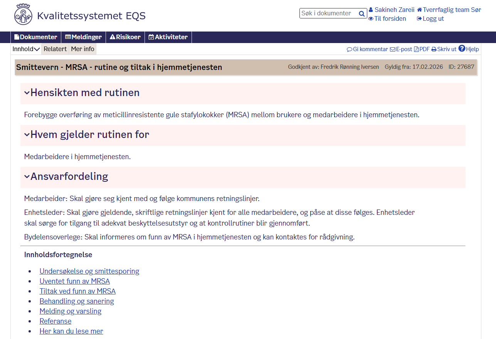

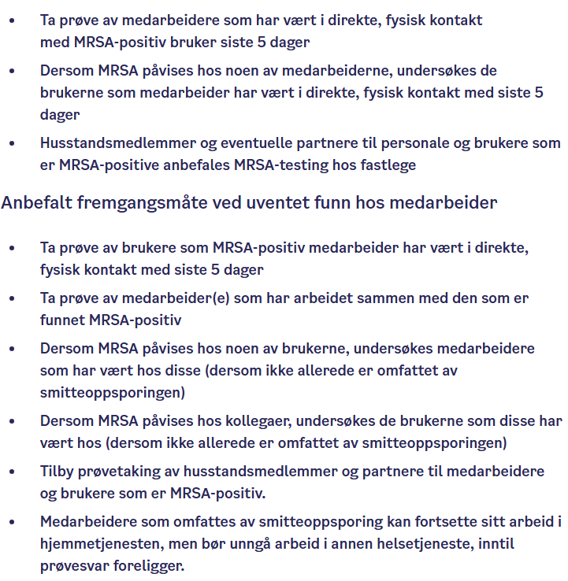
Finn ut hvor brukeren har time. Er det hos fastlegen, på sykehuset, eller hos tannlege?
Hvis timen er på sykehuset:Ring nummeret som står på innkallingsbrevet, oppgi brukers fødselsnummer og tiden bruker har time og si at du ønsker å bestille pasienttransport for 30-45 minutter før denne timen. Du må oppgi hva slags bil du skal bestille og om bruker skal reise med ledsager eller uten ledsager (vurder dette utfra brukers tilstand) Etter at du har bestilt transport, må du dokumentere i Elise og Gerica
Hvis bruker har time hos fastlegen: Du kan finne navn og nummeret til fastlegen i brukerkortet. Ring og oppgi tidspunktet for legetimen og at du ønsker å bestille pasienttransport til 30-45 minutter før timen
Hvis bruker har time hos tannlege: Man kan ikke bestille pasientransport når bruker har tannlegetime. Vi må bestille vanlig taxi eller TT-drosje. for vanlig taxi kan du ringe Oslo-taxi. For TT-drosje må du ringe 04521📞 eller 22057070📞
- ➡️
- ➡️
- ➡️
- ➡️
- ➡️
- ➡️
Felles faglige oppgaver
| Fysiologiske parametere | 3 | 2 | 1 | 0 | 1 | 2 | 3 |
|---|---|---|---|---|---|---|---|
| Respirasjonsfrekvens (per minutt) | <= 8 | 9-11 | 12-20 | 21-24 | >=25 | ||
| SpO2, Skala 1 (%) | <= 91 | 92-93 | 94-95 | >= 96 | |||
| SpO2, Skala 2 (%) | <= 83 | 84-85 | 86-87 | 88-92 >= 93 på luft | 93-94 | 95-96 på oksygen | >=97 på oksygen |
| Luft eller oxygen | Oksygen | Luft | |||||
| Systolisk blodtrykk (mmHg) | <= 90 | 91-100 | 101-110 | 111-219 | >= 220 | ||
| Pulsfrekvens (pr. minutt) | <= 40 | 41-50 | 51-90 | 91-110 | 111-130 | >= 131 | |
| Bevissthetsnivå | A | C, V, P, U | |||||
| Temperatur | <=35,0 | 35.1-36.0 | 36,1-38,0 | 38,1-39,0 | >=39,1 |
| Bevissthetsnivå | Skala 2: |
| A= Alert (Våken) | Lege skal dokumentere i journal når skala2 skal brukes. Ved alle andre tilfeller brukes Skala1 |
| C: Confusion (Nyoppstått forvirring) | |
| V: Voice (reagerer på tiltale) | |
| P: pain (reagerer på smertestimulering) | |
| U: unresponsiv (reagerer ikke på tale- eller smertestimulering) | VED HJERTESTANS RING 113 OG START HLR |
| NEWS-skår | Overvåkningsfrekvens | Klinisk respons | Fare for mortalitet |
|---|---|---|---|
| 0 | Minimum hver 12 time | Følg rutinene for MEWS2 overvåkning ved ditt arbeidssted | Lav |
| Totalt 1-4 | Maksimum hver 4-6 time | -Informer ansvarlig sykepleier/helsepersonell på vakt om NEWS2 skår -Ansvarlig sykepleier/helsepersonell tar stilling til økt overvåknings-frekvens, behov for klinisk tiltak og/eller legevurdering |
Lav |
| Skår 3 i ett parameter | Minst en gang per time | - Ansvarlig sykepleier/helsepersonell skal kontakte lege umiddelbart for vurdering - Vurdere behov for tettere overvåkning eller høyere behandlingsnivå |
Lav-Middels |
| Totalt 5 eller høyere grenseverdi for rask responssenter | Minimum en gang i timen | - Ansvarlig sykepleier/helsepersonell skal umiddelbart kontakte lege - lege vurderer behov for overflytting til høyere behandlingsnivå |
Middels |
| Totalt 7 eller høyere øyeblikkelig respons |
Kontinuerlig overvåkning av vitale funksjoner | - Ansvarlig sykepleier/helsepersonell skal umiddelbart kontakte ansvarlig lege, legevakt og/eller 113 - Videre behandling med riktig begandlingsnivå med kontinuerlig overvåkning vurderes. Dette må vurderes opp mot behandlingsbegrensende hensyn |
Høy |
| ABCDE-Observasjon og tiltak |
|---|
| ▶️ A: Airways/Luftveier Sørg for fire luftveier 👉 Hodeløft/kjevetak, sideleie, fjerne fremmedlegme |
| ▶️ B: Breathing/ respirasjon Pustebesvær/taledyspne, respirasjonsfrekvens, respirasjonslyder, rytme/dybde, hjelpemuskulatur, cyanose, SpO2 👉 Kroppsleie, berolige, pusteveiledning, oksygen |
| ▶️ C: Circulation / Sirkulasjon Hud (farge / temp, kald/kvalm), kopillær fyllingstid, puls (rytme/fylde), BT |
| ▶️ D:Disability / Bevissthet Bevissthetsnivå (ACVPU), tegn på hjerneslag (PSL/andresymp.), sjekk pupiller og evt. blodsukker 👉 Frie luftveier, evt. sideleie, regulere blodsukker |
| ▶️ E: Exposure / Kroppsundersøkelse / omgivelser / Hudforandringer (utslett, sår ol.), kateter/ dren, temperatur, feilstilling / brudd, smerter etc. Endring i hjemmeforhold? 👉 Tiltak avhenger av funn |
| Mistanke om sepsis |
|---|
| quick SOFA (qSOFA) |
| Respirasjonsfrekvens >= 22 Endret metal status Systolisk BT <= 100 mm Hg MVed mistanke om klinisk infeksjon og minst to av kriteriene over og/eller NEWS >= 5: Varsel lege og/eller kontakt legevakten 📞 |
| Tegn på hjerneslag |
|---|
| PSL: prate, smile, løfte Andre symptomer: Akutt oppstått ensidig koordinasjonssvikt (akutt gangvansker) Halvsidig synsfeltutfall Hyperakutt hodepine Nedsatt snsibilitet Varsel lege og/eller kontakt legevakten 📞 |
| ▶️ ISBAR-kommunikasjon |
|---|
| ▶️ I: Identifikasjon Ditt navn, funksjon og arbeidssted, pasientens navn, fødselsnummer og adresse |
| ▶️ S: Situasjonen Hva er det aktuelle problemet / årsaken til kontakt? "jeg ringer fordi..." |
| ▶️ B: Bakgrunn Kortfattet og relevant sykehistorie, aktuell diagnose og/eller tidligere diagnoser, Evt. smitte/allergier og behandlingsreservasjoner |
| ▶️ A: Aktuell tilstand Aktuelle målinger etter ABCDE observasjoner, evt. NEWS skår "jeg er bekymret fordi...", "jeg tror årsaken er..." |
| ▶️ R: Råd/Respons "Hva synes du jeg skal gjøre?", "Da gjjør jeg følgende...", "Når vil du at jeg skal ta kontakt igjen?", Bli enige om felles plan for videre oppfølging |
Verktøyet TIMES
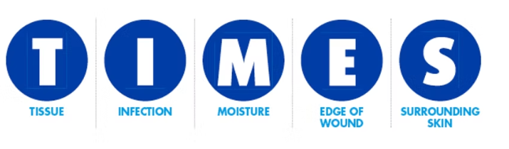
T ( tissue = vev):
Beskrivelse av vevet i sårbunnen.
Beskriv: farge(svart, grå, gul,hvit,rød og rosa), granulasjonsvev, hypergranulasjon, våt nekrose, tørr nekrose, fibrin belegg, gul nekrose, svart nekrose, velsirkulert vev, blek vev. Om det er synlig sene eller benvev i bunnen av såret.
Merk at noen typer bandasjer kan påvirke fargen av vevet. Noen sølvholdige bandasjer kan for eksempel etterlate et gråaktig avtrykk i sårbunnen. Jodprodukter kan farge vevet brunlig eller gult.
påfallende lukt bør også dokumenteres under «I» i TIMES.
I ( inflammation/infection):
Beskrivelse av tegn til betennelse i såret.
-rødme i sårkantene. Betennelse (inflammasjon) betyr ikke nødvendigvis infeksjon.
Veldig mange kroniske sår sitter fast i en kronisk inflammasjons fase uten at bakterier nødvendigvis er skyld i det. Noen ganger kan det være vanskelig å skille en betennelse fra en infeksjon.
Sterk fra såret kan være tegn om økt bakteriell belastning
Klassiske infeksjonstegnene som rødme, hevelse, lukt og smerte, ikke nødvendigvis er til stede i sår som har infeksjon- dette gjelder for eksempel hos noen pasienter med diabetiske fotsår.
vi også beskriver om vi ser biofilm. Noen såreksperter sier at en ikke kan se biofilm. Vi er ikke enig i det- noen ganger ser man et tynt grålig belegg i sår som åpenbart må være biofilm. Om man mistenker at biofilm er synlig kan du skrive «mistenker biofilm i såret».
M (moisture = sårvæske):
Dokumenter hvor mye sårsekret det kommer fra såret og hvordan sårvæsken ser ut. Den beste pekepinn for å vurdere hvor mye væske som kommer fra såret er den bandasjen du nettopp tok av! Spør gjerne også pasienten hvor mye det væsker når han/hun er hjemme.
Hvis pasienten forteller deg at han/hun skifter 3 x daglig så vet du at det sannsynligvis er mye sekresjon.
Avtagende mengde sårvæske fra et sår er som regel et godt tegn. De fleste sår produserer mindre væske når de begynner å hele. Beskrivelsen av mengden sårvæske er selvsagt en subjektiv vurdering.
Noen beskriver mengden sårvæske som lite, middels og mye. Andre benytter +,++ og +++ for å angi volumet, men det forteller oss lite om hvor mye volum det egentlig er.
I tillegg til mengden av sårvæsken beskriver en også fargen. Er sårvæsken serøs (lys i farge som uttynnet urin) eller er den hvit, gul, grønn, lys rødt eller blodig for eksempel? Et sår som oppfører seg normalt har ofte serøs sårvæske, altså en lys, gjennomsiktig farge. Grønn sårvæske bør gi mistanke om økt forekomst av bakterien pseudomonas aeruginosa i såret. Forekomst av den bakterien i større
konsentrasjoner kan hemme sårheling fullstendig eller føre til en rask forverring av såret. Om sårvæsken er blodig når vi skifter på såret kan det bety at bandasjen henger seg litt fast i såret og at vi river opp sårbunnen når vi fjerner bandasjen.
Merk at noen bandasjer også kan påvirke fargen av sårvæsken. Sølvbandasjer kan gi en lett gråaktig farge i sårvæsken, mens jod produkter ofte gir en brun eller gul farge i sårvæsken. Bandasjer som inneholder PHMB ( Polyhexamethylene Biguanide), for eksempel Kerlix AMD, kan føre til grønlig farge i sårsekret som kan feiltolkes som pseudomonas infeksjon.
E ( edge = sårkanten):
Her beskrives det om en ser friske kanter, om det er nekrose i kantene eller om en kan se tegn til epitelialisering (ny hud som begynner å vokse over såret). Noen ganger er epitelialiserings prosessen veldig diskre - så en må av og til se nøye etter for å oppdage det. Det er viktig å se godt etter fordi hvis en tror at det er epitelialisering på gang, er det viktig at vi ikke debriderer på de stedene på sårkanten. Vi vil jo ikke skade den nye huden som vokser over!
Om det er mye fuktskade (maserasjon= oppbløtt hud) kan en også beskrive det her. Om det er underminering av sårkantene hører det også under «E» i TIMES. Hos diabetikere ser en ofte tørr, hard og opphøyd hud spesielt ved sår under fotsålen. Se også etter ødem i sårkantene som kan være et tegn på inflammasjon.
S ( surrounding skin= huden lenger vekk fra såret):
Observer hvordan huden ser ut noen centimeter vekk fra såret. Er den betent? Tørr? Flassende? Er det tegn til eksem (for eksempel stasedermatitt?). Har pasienten kanskje klø merker på huden i nærheten av såret? Er det hyperpigmentering (hemosiderin) som kan tyde på venøs insuffisiens? Ser en åreknuter under huden? Er det ødem lenger vekk fra såret?
Merk at en har lov til å sette et spørsmål tegn bak et funn som man ikke er helt sikker på. For eksempel, hvis du ser et gult belegg har du lov å skrive « gul nekrose? Fibrin?»
TIMES eksempler:
Eksempel 1
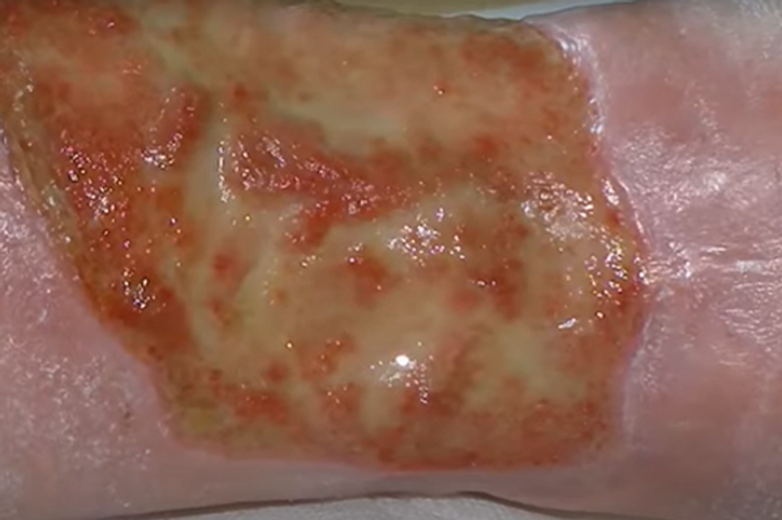
T: Enkelte områder med granulasjonsvev, muligens lett hypergranulasjon. Et tykkere gult belegg som kan være fibrin eller gul nekrose.
I: Ingen opplagte inflammasjon- eller infeksjonstegn. Misstenker biofilm.
M: Væskemengden er vanskelig å vurdere ut fra et bilde alene, men for øvelsen sin skyld la oss si at bandasjen som var skiftet for 3 dager siden var 50% fylt med serøs sårvæske. Da kan vi kalle det moderat væskemengde eller skrive det som ++.
E: Ingen overbevisende epitelialisering. Ingen tegn til underminering. Ingen fuktskade eller forhøyning av sårkantene
S: Rosa hud uten maserasjon eller andre patologiske tegn
Konklusjon fra vår TIMES vurdering:
Dette såret ser egentlig ganske lovende ut. En ser fra hudkantene på høyre siden av bildet at huden så gjenre vil vokse over såret, men den klarer det ikke fordi det er et tykt, gult belegg som stopper epitelialisering. Om en debriderer vekk alt det gule vil såret sannsynligvis begynner å hele. Det beste her ville være debridering med en curette. Om en føler seg ukomfortabelt med det kan en prøve å debridere litt om gangen ved hvert sårskift med en mikrofiber debrideringspad eller klut. Siden det ikke er så mye sårvæske, er skiftintervallen med sårskift hver tredje dag sannsynligvis ok. Det er ikke sikker at en trenger å bytte bandasjetypen heller- det viktigste her er å få debridert såret godt!
Eksempel 2
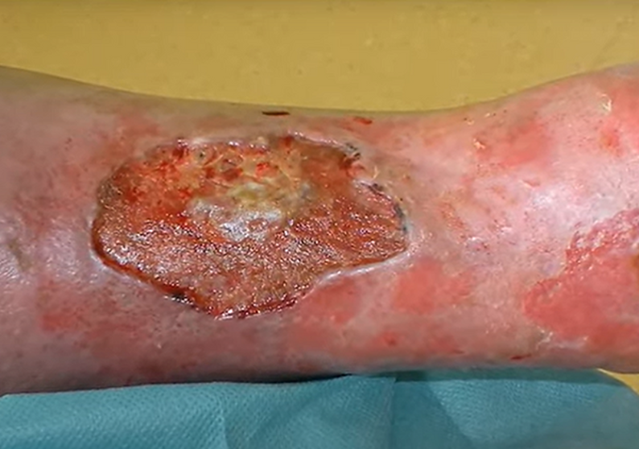
T: 2/3 deler av såret har lett brunlig flat sårbunn, enkelte små områder med friskere farge. Kun noen små områder med sparsom granulasjonsvev. 1/3 del av såret er dekket med et tykkere gult belegg. ( fibrin/ gul nekrose?)
I: Flekkvis irritasjon av huden rundt såret -inflammasjon? Ikke opplagt infeksjon. Ingen lukt.
M: Væskemengden er vanskelig å vurdere ut fra et bilde alene, men for øvelsen sin skyld la oss si at bandasjen som var skiftet sist dagen før, var godt mettet med serøs ( lett gulaktig, gjennomsiktig) sårvæske. Væskemengde = +++
E: Noen av sårkantene er litt forhøyet, stedvis er sårkantene rødlig, på motsatt side er sårkantene dekket av litt belegg
S: Overfladiske erosjoner flere steder i huden rundt, muligens fuktskade fra sårsekret? Eksem?
Konsekvens av vår TIMES vurdering?
En bør debridere de områdene med gult belegg og skrape forsiktig med curette over de andre områdene også for å friske de opp. Alternativ kan en prøve mikrofiber debridering pads for å gradvis fjerne belegget ved hvert sårskift. De overfladiske hudskadene lenger vekk fra såret er sannsynligvis forårsaket av fuktige bandasjer som har ligget for lenge. Bytt til en hyperabsorberende bandasje og ha kortere skiftintervaller. Bruk barriere produkt som beskytter mot fukt på all hud et godt stykke vekk fra såret også ( overalt hvor huden er skadd)
Eksempel 3
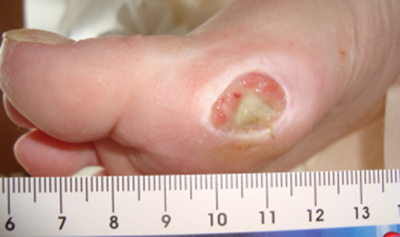
T: Cirka 60% av såret er granulerende med ganske fin rosa farge. Et tynt belegg på det- fibrin? Biofilm? Ned mot fotsålen er den en trekantformet gul nekrose som virker tykkere.
I: Ingen opplagt inflammasjon eller infeksjon. Et tynt, litt grålig belegg på det område som har granulasjonsvev- biofilm?
M: Væskemengden er vanskelig å vurdere ut fra et bilde alene, men for øvelsen sin skyld la oss si at bandasjen som var skiftet 3 dager var helt mettet med sårvæske- altså moderat- rikelig sekresjon. Huden rundt såret er oppbløtt (maserasjon) noe som tyder på en del sårsekresjon.
E: Hvite sårkanter som tyder på fuktskade. Ingen epitelialisering på gang
Konklusjon fra vår TIMES vurdering:
Vi bør debridere vekk den tykke gule nekrosen. Vær oppmerksom på anatomien her – dette såret ligger rett over MTP ledd. I foten er det kort vei fra hud ned mot bein. Dette har utseende typisk for et diabetisk fotsår. Alle diabetiske sår skal behandles i spesialisthelsetjenesten. Dette sår bør henvises til en sårpoliklinikk. Vi sier ikke at en ikke har lov å debridere dette i primærhelsetjenesten. Hvis fastlegen føler seg kompetent til det så kan en debriderer det – men pasienten må henvises videre uansett. Det aller viktigste tiltak med dette såret er avlastning! En bør ha tette skiftintervaller og bytte til en bandasje som absorberer bedre, samt benytte barriere produkt på sårkantene.
dokumentasjon av sår i Gerica
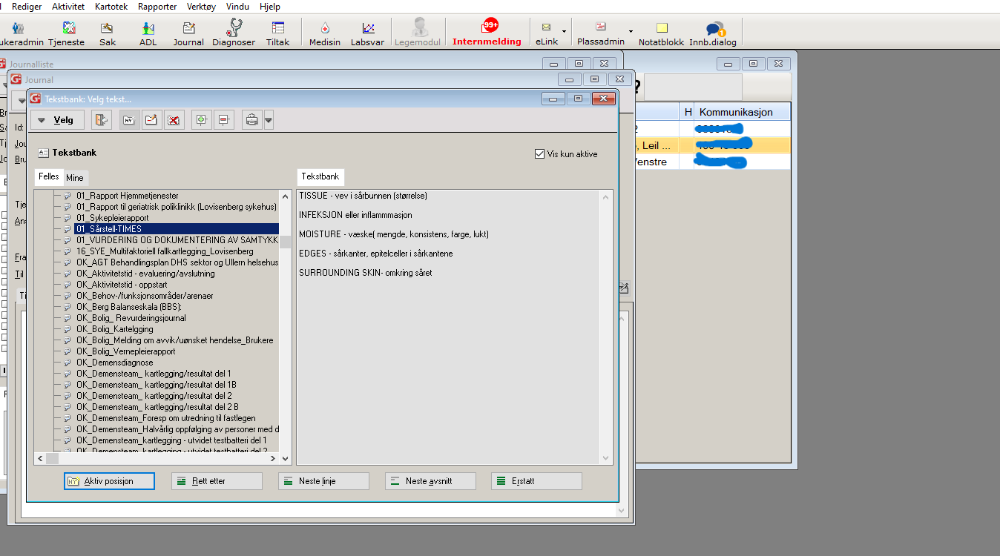
➡️ Klikk på brukeroversikt i gerica. Finn og velg brukers navn

➡️ Klikk på tjeneste
➡️ Klikk på tiltak og deretter "ny"
➡️ Velg riktig tiltak
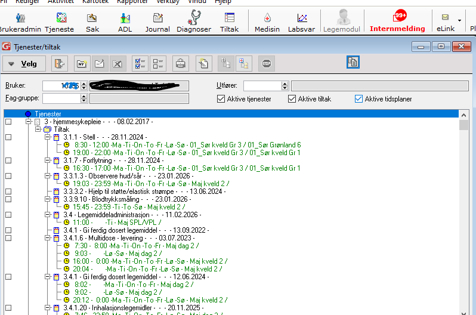
➡️ velg tiltaket og klikk på ny. vindu for tidsplan kommer opp

➡️ Velg startdato, tidspunkt og rute
Velg bruker i brukeovesikt
Klikk på tiltak øverst i siden
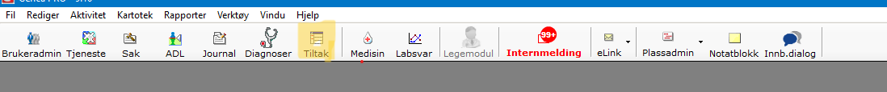
i tiltak-vinduet, kan du ladge/sette/endre:
situasjon/tidsplan/nødvendig kompetanse/nivå/tidsestimat/antall utførere/nivå/prosedyre
på tiltakene.
Du kan også avslutte tiltak
-- Lag ny situasjon:
Klikk på "+" tegnet

Høyreklikk i feltet "situasjonstype"
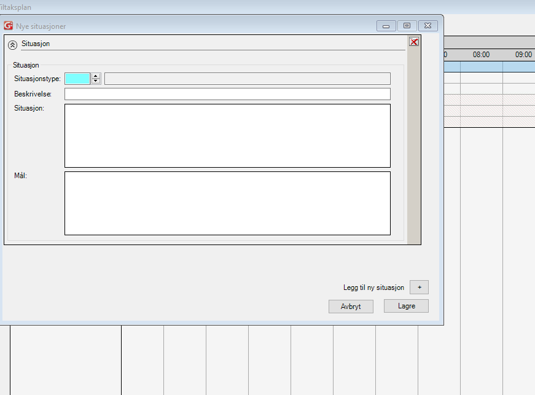
Velg riktig situasjon og lagre

Velg riktig situasjon og lagre

Høyreklikk på tiltaket du vil sette situasjonen på -> Bytt situasjon

Endre prosedyre
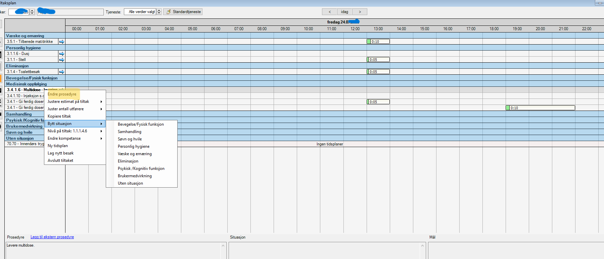
Endre kompetanse

Endre nivå på tiltaket
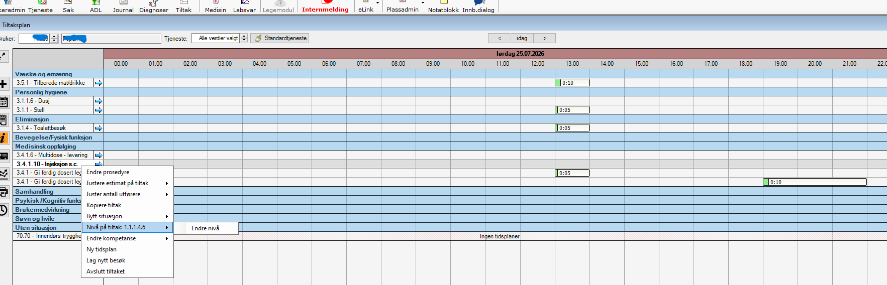
Bruk "justere estimat" for å sette tidsplan på tiltaket

- Her kan du også se fremtidige genererte oppdrag

- ➡️ Henvisning til kef sendes i ELISE
- ➡️ For brukere som ikke har kef fra før - sende henvendelse til arbeidsteam Gamle Oslo KEF.
- ➡️ For brukere hvor kef allerede er inne kan det sendes Oppgave i ELISE til arbeidsteam Gamle Oslo KEF
- ➡️ Alle brukere skal ha vektkontroll og vurdering av ernæringsstatus
Klinisk ernæringsfysiolog, telefon 45733162,
epost: kristiane.hjelkrem@bgo.oslo.kommune.no
Administrative oppgaver for sykepleiere (Sjekk også i merkantil-siden)
➡️ Elink
Sjekke epikriser, svare på innleggelserapporter, henvendelser fra fastleger/ sykehus o.l.
OBS: Når du sender PLO til fastlegen, velg meldingstypen 'helseopplysninger'. Da får fastlegen samtidig medisinlisten som er registrert i Gerica
➡️ Tiltaksplaner
Oppdater tiltaksplaner der det er aktuelt. Gå gjennom brukere du er TA for og gjør evt. endringer
➡️ Kommunikasjon
Pasientnett, epikriser/journal/medisinhylle sjekkes daglig. Be om opplæring hvis du ikke er kjent med det.
➡️ Medisinrom
Ta ut A og B preparater til neste dag, gå gjennom utstyr og sårutstyr og skriv opp på liste om noe mangler, rydde narkoskap og send tilbake gamle medisiner
➡️ OL-beskjedjournal
➡️ Se gjennom OL beskjeder for å danne en oversikt
➡️ Rapporter og praktiske oppgaver
Gjennomgang av aktuelle problemstillinger fra rapport. Utføre praktiske oppgaver knyttet til dette
➡️ Multidoseimport
Fullfør i multidose uker
➡️ Medisinering
Legg inn medisinendringer for aktuelle brukere på Gerica
Hvor finner jeg ofte brukte skjemaer:
Samtykkeskjema
-> trenger hjelp til å finne skjemaet i GericaHent ut samtykkeerklæring fra Gerica
-1 Søk opp relevant bruker
2- Trykk fletting
3- Dobbeltklikk på OK_Samtykkeerklæring Pasientnet
4- Trykk "Nei" på neste vindu som kommer opp
5- Skriv ut samtykkeerklæring som kommer opp (ikke lagre, da det senere skal skannes inn etter det er signert av pasienten)
Praktisk bistand
trenger hjelp til å finne skjemaet i GericaSøknad om trygghetsalarm
trenger hjelp til å finne skjemaet i GericaNøkkelkvittering
trenger hjelp til å finne skjemaet i GericaTannhelse-skjema
➡️ Finn riktig bruker og klikk på navnet
➡️ Klikk på tjeneste
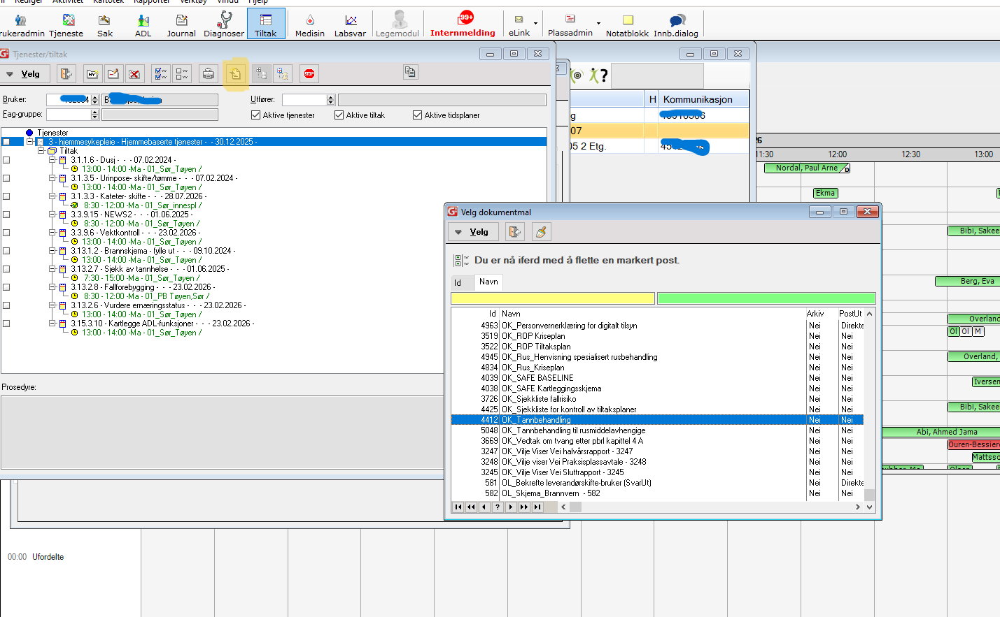
➡️ Klikk på fletting
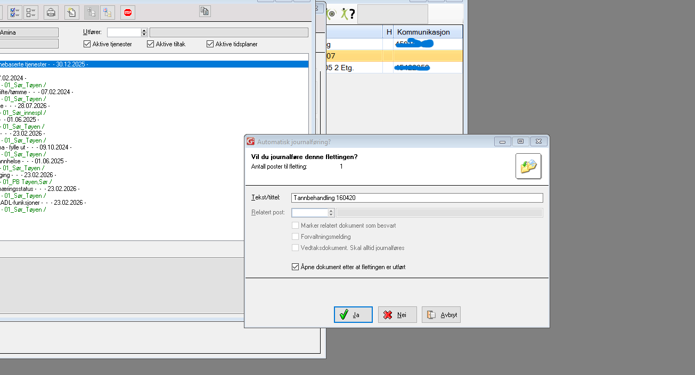
➡️ Svar nei på spørsmålet: "Ønsker du å journalføre denne flettingen"
➡️ Skjemaet kommet opp. Klikk på printer
****Husk at du må velge riktig printer: Printix anywhere****
➡️ Du må nå printe ut brukersmedisinliste(se eget punkt)
➡️ legg medisinliste og tannlegeskjemaet i en konvolutt, skriv adressen til Tøyen tannklinikk(Hagegata 32) og legg i hylla (post ut) på kopirommet
➡️ Finn riktig bruker
➡️ Klikk på medisin
➡️ Klikk på doseringsliste kompakt
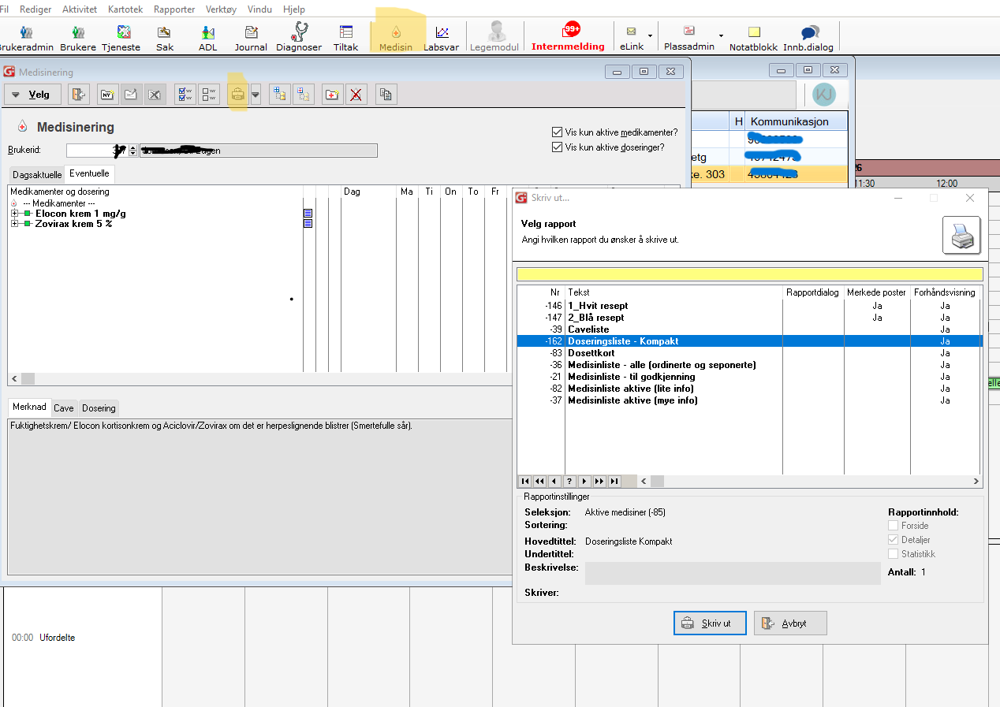
➡️ Skriv ut
➡️ Husk å velge riktig printer: printix anywhere
Versjon 1
App/link til Pasientnett finnes under Citrix portalen og krever innlogging med BankID via ID-portalen (for at personvernregler overholdes ved overføring av personsensitiv informasjon).
Steg 1: Hent ut samtykkeerklæring fra Gerica
- Søk opp relevant bruker
- Trykk fletting
- Dobbeltklikk på OK_Samtykkeerklæring Pasientnett
- Trykk "Nei" på neste vindu som kommer opp
- Skriv ut samtykkeerklæring som kommer opp (ikke lagre, da det senere skal skannes inn etter det er signert av pasienten)
Steg 2: Få pasient (med beslutningskompetanse) pårørende eller verge til å skrive under på skjemaet
Når samtykkeskjemaet er signert og mottatt på tjenestestedet skal skjemaet påføres om pasient har multidose (+MD), og hvilken avdeling/hvilket team den er tilknyttet.
Hvis pasienten ikke har multidose påføres det (- MD) og tjenestested.
Signert samtykkeerklæring skal skannes inn i pasientens elektroniske pasientjournal og en kopi skal leveres til pasienten.
Steg 3: Skanne signert samtykkeskjema
Hvert tjenestested har egen QR-kode for skanning inn i Gerica.
Steg 4: Hente opp dokument i Gerica
1- Åpne Gerica
2- Trykk på "Aktivitet" i menylinjen øverst
3- Trykk videre inn på "Håndtering av skannede dokumenter" (dokumentet du har skannet inn skal ligge her)
4- Trykk på riktig dokument
5- Finn riktig pasient (F4)
6- Trykk "Tittel" og lag navn på dokumentet (eksempel: Samtykkeskjema pasientnett)
7- Trykk "Opprett kobling"
8- Trykk på dokumentet (nå med grønn hake) og trykk "Utfør"
9- Svar "Ja" på dialogboks som kommer opp.
Det skannede dokumentet finnes nå i pasientens journal, journaltype 200.
Steg 5: Overføre dokument i Gerica til "Felles sikkert område (x:)"
1- Åpne dokumentet du har lagret i Gerica.
2- Lagre fil i egen mappe på "Felles sikkert område" (Hvert tjenestested har egne mapper, hør med leder hvilken mappe som skal brukes).
3- Lagre dokumentet med pasientens navn og fødselsdato for å kunne lettere finne det frem.
Steg 6: Last opp signert samtykkeskjema i pasientnett
1- Logg inn i pasientnett med din egen bank ID (på grunn av hensyn til personvernets regelverk)
2- Velg "Innmelding" i menyen
3- Trykk på knappen "Innmelding", et felt for innføring av pasientens fødselsnummer kommer opp.
4- Last opp signert samtykkeskjema fra "Felles sikkert langringsområde"
5- Trykk "neste" til du kommer til knappen "send"
6- Trykk "send"
Steg 7: Slett dokumentet fra Felles sikkert lagringsområde (X:)
1- Felles sikkert lagringsområde finner du på citrix portalen
2- Gå inn på citrix portalen og finn Felles sikkert lagringsområde mappen
3- Når mappen åpner seg, gå inn på Felles sikkert lagringsområde (X:)
4- Gå inn på Gerica mappen, og så inn på pasientnettmappen
5- Slett dokumentet som nå er ferdig lastet opp i pasientnett
6- Felles sikkert lagringsområde mappen skal kun benyttes som et mellomlagringssted ved overføring fra Gerica til Pasientnett
Steg 8: Apoteket legger inn pasienten i Pasientnett
Pasienten er synlig i Pasientnett for det tilhørende teamet og nå kan bestillinger av reseptpliktige/ reseptfrie legemidler, medisinsk utstyr og andre varer utføres
Versjon 2
1- Send samtykkeskjema til bruker og få signatur
2- Skann skjemaet og send det til din outlook
3- Åpne outlook og mailen, lagre som -> lagre filen et sted du kan finne senere
4- Åpne Citrix
5- Dobbelklikk Filsluse intern
6- Velg filen du har lagret og laste opp
7- Last ned skjemaet
8- Åpne filsluse sikker
9- Last ned filen
10- Nå er filen i sikker sone og kan lastes opp i pasientnett
11- Logg på pasientnett
12- Klikk på innmelding
13- Fyll ut skjemaet som kommer opp
14- Last opp samtykkeskjema
15- Dobbelsjekk at det er riktig skjema for riktig bruker
16- Husk å hake av at bruker ønsker multidose
17- Send innmeldingen
18- Fastlegen eller sykehuset må sende oppdatert medisinliste til apotek1 Skåresletta for at multidosen skal kunne pakkes
19- Send en PLO og minn legen på at han/hun må sende medisinliste
20- Når medisnliste og reseptene er mottatt i apoteket, kan multidosen hastebestilles
Informasjon til legen om hvordan medisinlisten skal sendes til apoteket(noen leger vet ikke hvordan de skal gjøre det): den må sendes på en av måtene under
1- Medisinliste kan sendes på fax-nr 67973550, dette er faksnummeret til apotek1 Skåresletta
2- Medisinlisten kan sendestil denne epost adressen: kunde@apotek.no
3- Medisinliste kan sendes per post til Skåresletta(kan ta lengre tid)
4- Hvis hjemmesykepleien har mottat medisinliste fra en annen lege/institusjon: Hvis medisinlisten er signert av en lege, kan den skannes i pasientnett
Sjekk ansvarstelefon og dignio for varsler og behandle disse hver vakt. Dokumenteres i Gerica
- Gå inn på fanen aktivitet og deretter velg «arbeidsliste»
- Velg fanen tjeneste og høyreklikk når du står midt på fanen.
- Velg riktig tjeneste.I tillegg til tjenester som er haket er det viktig å velge tjeneste 101 hverdagsrehabilitering
- Deretter må du oppdatere.
- Rutiner


På multidosedagen team Sør(ulike uker)
➡️ sykepleiere begynner med å multidoseimport (før multidosene blir levert)
➡️ Bytt rolle til multidoseimport
➡️ Klikk på medisinering, en liste over brukere som trenger multidoseimport kommer opp(det er et konvolut-ikon ved siden av navnet)
➡️ Ordinasjonskortene er blitt oppdatert av apoteket på Gerica og de er de samme kortene som vi får levert senere på dagen
➡️ Ikke alle med konvolut-ikon, har medisinendringer. Apoteket oppdaterer ordinasjonskortene en gang i måned? og da vises ikonet
➡️ Begynn fra øverst i lista og sjekk om medisinene er riktige før du importerer
Forklaring av symbolene:
- Seng/institusjonssymbol: Pasienten har eller har nylig hatt institusjonstjeneste (korttids- eller langtidsopphold).
- Grønn hake: Legemiddelet og doseringen på ordinasjonskortet er identisk med det som allerede ligger i Gerica.
- Gult notatark: Det finnes merknad eller tilleggsinformasjon knyttet til legemiddelet.
- Grønn sirkel med pluss: Legemiddelet eller doseringen finnes på ordinasjonskortet, men ikke i Gerica. Legen har forordnet mediskamentet og sendt endringen til apoteket, men vi har ikke lagt den manuelt i Gerica. Sjekk mot siste epikrise/medisinliste
- Rød sirkel med minus: Legemiddelet finnes i Gerica, men ikke på nytt ordinasjonskort.Hva skal vi gjøre?????
- Grønt «abc»-symbol / plante-lignende symbol: Doseringen er uendret, men merknaden er endret.
- Blå sirkel med «i»: Legemiddelet er registrert manuelt i Gerica som multidoselegemiddel, men finnes ikke på ordinasjonskortet. Hva skal vi gjøre??????
- Blått spørsmålstegn: Medisiner er blitt manuelt registrert i Gerica av en medarbeider. Kontroller om de har kommet i ordinasjonskortet med en grønn hakke ved siden av.Sammenlign også siste epikrise.
Gerica mangler tilstrekkelig strukturert informasjon til å gjennomføre full automatisk oppdatering.Hva skal vi gjøre????

--- I bildet over, var Simvastatin lagt manuelt i Gerica og nå har den kommet i multidose. Boksen ved siden av blå 'i' kan hukes av. tabletten importeres og fjernes fra 'faste ordinasjoner utenom multidose'. Vurder nøye om legemiddelet skal beholdes eller ikke. Hvis legen ikke har skrevet merknad(gult lapp) om hva dosering/tidsplanen er, må vi beholde den manuelle registreringen i Gerica
--- Kontroller ordinasjonskort og legens ordinasjon.
--- Vær ekstra oppmerksom ved legemidler som er lagt inn manuelt.
➡️ Etter at multidosene er blitt levert: Ta boksene til grupperommet
➡️ Nå er medisinene som er blitt imporeter er riktige i Gerica og vi kan kontrollere multidosen mot dem
➡️ Finn riktig bruker, åpne medinkortet i Gerica
➡️ Sammenlign første dag av hver multidoserull med medisiner i Gerica og sett hakke foran de som er riktige
➡️ Sorter rullene som skal sendes til bruker og de som skal beholdes på medisinrommet og legges i bakkene
➡️ Ordinasjonskortene med endringskort skal til brukere
➡️ Ordinasjonskortene uten endringskort skal legges i ordinasjonspermen. Ta det gamle ordinasjonskortet og makuler
Fra EQS:
Det er stor risiko for feil ved multidoseimport, og importen bør gjennomføres av faste medarbeidere som har fått opplæring og forstår prosessen rundt multidoseimporten.
Ansvar: Sykepleier/vernepleier/farmasøyt
Bytt til riktig rolle for å kunne jobbe i multidoseimport-bildet. Følg rutine for bestilling og mottak multidose før utføring av multidoseimport: DokumentLegemiddelhåndtering - Multidose - Oppstart, bestilling, mottak og avvikling. Sett av tilstrekkelig tid til multidoseimport på et tilrettelagt sted uten forstyrrelser. Ha tilgjengelig to PC-er og eventuelt en LMP for å kontrollsjekke legemiddellisten etter import. Dette er spesielt viktig for å sjekke om legemidler som tas fast utenom multidoserull vises med riktig dose og tidsplan. Ha fysisk ordinasjonskort tilgjengelig og se på endringsrapporten for å forstå årsaken til endringene, og få et helhetlig overblikk. Sjekk om endringene samsvarer med pasientens sykehistorie og nåværende status (se steg 4).
Ny pasient med multidose - første gang det gjøres multidoseimport
Første gang det utføres multidoseimport, kan det komme en lang og uoversiktlig legemiddelliste.
Det anbefales sterkt at legemiddellsamstemming er utført, og at både fastlegen og pasienten/pårørende har bekreftet/avkreftet hvilke legemidler som er i bruk på det gjeldende tidspunktet.
Sjekk kjernejournal for å se på historikken, utstedelse av e-resepter og uthenting av legemidler som er gjort det siste året. Hyppigheten av legemidler hentet på apoteket kan gi en indikasjon, men ikke fasit, på hvordan legemidlene blir brukt (ofte/for sjeldent/ikke i det hele tatt).
Ta kontakt med fastlegen ved tvil.
Klikk på madisin-knappen, velg Multidoseimport
Da kommer dette bildet opp (brukerbilde til venstre og legemiddeloversikt til høyre):
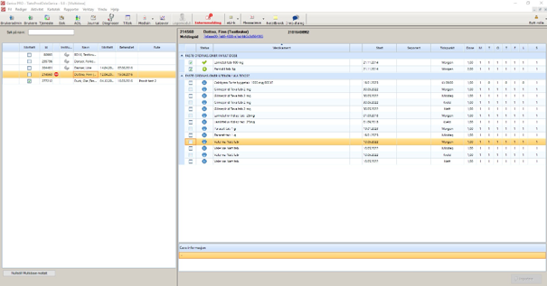
Se igjennom brukerbildet og legemiddeloversikten for å få et helhetlig bilde over:
hvem som er innlagte på korttids-/langtidsinstitusjoner
nye innmeldte pasienter
multidoseleveranser som er satt på midlertidig stopp
Se her for forklaring av kolonnene og symboler i oversikten
Venstre side i multidoseimportbildet viser oversikt over alle pasienter. Pasienten kommer med på multidoseimportlisten i tilfeller der pasienten har:
et legemiddel i medisinkortet som er merket som multidose
mottatt ordinasjonskort som enda ikke er importert

Nullstill avkrysningskolonnen "Mottatt" ved å trykke på .
Huk så av avkrysningsboksen "Mottatt" for hver multidoserull som er fysisk mottatt fra apoteket.
Gå gjennom ordinasjonskortet på papir og sammenlign med eksisterende legemiddelliste.
Sjekk eLink for endringer fra fastlegen.
Vurder endringer som fastlegen ikke har informert om (eksempel: nye legemidler, endring av dose eller seponeringer). Kan endringene/avvikene skyldes gammel legemiddelliste fra siste innleggelse/ikke oppdatert legemiddelliste med gammel informasjon?
Sjekk kjernejournalen for nye resepter som kan bekrefte/avkrefte ny informasjon i epikrisen/endringene fra fastlegen.
Informer fastlegen om nye endringer eller eventuelle feil, og be om at det sendes ny oppdatertlegemiddelliste til multidoseapotek.
Sørg for å ha tilstrekkelig med legemidler og be om e-resept ved påbegynt behandling før ny multidose er pakket.
Dokumenter viktige endringer i 136-fagjournal i Gerica og informer pasient/pårørende.
Utfør multidoseimport ved å huke av for riktige legemidler som skal importeres, slik at legemiddellisten og informasjonen knyttet til legemiddelbruken vises riktig i Gerica.
Vær nøye med å se på hvert symbol som står foran det enkelte legemiddelet og hvilken betydning det har for hva som skjer med det enkelte legemiddelet/dosering ved import av ordinasjonskortet til pasientens legemiddelliste (se detaljert beskrivelse av symboler for status i multidoseimport bildet).
OBS! Dersom informasjonen om hvordan legemiddelet skal brukes er lagt inn manuelt i Gerica, pass på å huke av for riktig linje slik at viktig informasjon ikke blir slettet etter importen.
Husk å ta multidoseimport på multidoserullene som kommer til tjenestestedet utenom vanlige multidoseleveranser (eksempel: hastebestillinger, nye pasienter til avdelingen).
Dersom multidoseimport ikke er mulig å gjennomføre, må alle legemidler skrives manuelt inn i Gerica.
NB! Dersom et legemiddel er lagt inn manuelt, vil legemiddelet ligge dobbelt i sammenstillingsmodulen når det mottas nytt ordinasjonskort hvor dette legemiddelet er lagt inn. Det er da viktig å sette hake for å seponere den manuelle registreringen med symbol slik at legemiddelet kun kommer opp en gang i legemiddellisten i Gerica.
Sjekk alltid legemiddellisten i Gerica etter at multidoseimporten er utført.
Alle legemidler pasienten bruker skal gis etter skriftlig ordinering fra legen. Hvis det ikke foreligger en slik ordinering, skal de ikke stå på legemiddellisten og skal heller ikke gis til pasienten.
Gjør manuelle endringer i legemiddellisten i Gerica etter utført multidoseimport hvis det er behov for å:
legge til nytt legemiddel
seponere legemiddel
Sjekk at legemidler utenom multidose ligger riktig under faste/daglige inntak og eventuelle legemidler.
Sjekk om alle legemidler ved behov står på ordinasjonskortet. Hvis et legemiddel som ikke er brukt over lengre tid skal fjernes, eller et nytt legemiddel som ikke står der skal oppføres, skal dette bekreftes/avkreftes av fastlegen først, og endringene skal sendes til multidoseapotek ved første anledning.
Sjekk på LMP at dose og tidspunkt er riktig etter multidoseimport for legemidler utenom multidose. Vises ikke dette riktig på LMP må legemiddelet seponeres først, og så legges inn på nytt med riktig dose og tidsplan.
Eksempler på ikke-strukturert tekst som kan sendes fra legen og hvor det er stor risiko at det vises feil på LMP er legemidler som:
skal gis flere enn fire ganger daglig (parkinsonmedisin)
brukes etter avtale med legen (inhalasjoner og insulin)
Oppdater legemiddellisten slik at den samsvarer med legemidlene som skal gis til pasienten.
Det følger med to nye ordinasjonskort ved endringer
På tjenestestedet (medisinrom eller annet låst rom)
Ta ut gammelt ordinasjonskort fra perm.
Legg nytt ordinasjonskort (der endringene står forklart) i egen perm.
Makuler gammelt ordinasjonskort.
Ta med nytt ordinasjonskort (det uten endringene) hjem til pasient.
Ta med gammelt ordinasjonskort tilbake til kontoret.
Makuler gammelt ordinasjonskort.
Dokumenter at du har lagt igjen nytt ordinasjonskort.
Oppdatert ordinasjonskort skal ligge hjemme hos pasient slik at pasient/pårørende og eventuelt annet helsepersonell ved behov, kan få oversikt over legemidler pasienten bruker. Det er viktig å ha oppdatert ordinasjonskort/legemiddelliste hjemme hos pasienten i tilfeller der LMP ikke fungerer, systemet er nede eller pasient får besøk av legevakt.
Medarbeidere skal ta utgangspunkt i legemiddellisten i Gerica når de deler ut legemidler hos pasient. Ordinasjonskortet kan også brukes til å skaffe seg en oversikt over alle legemidlene og for å finne bilde av legemidlene som ligger i multidoseposene.
Ansvarlig: Annen sykepleier/vernepleier/farmasøyt enn den som utførte multidoseimporten
Utfør alltid dobbeltkontroll av multidoseimport Journalfør i Gerica.
Følgende tiltak brukes ved multidoseimport, og skal være et aktivt tiltak hos alle pasienter der multidoseimport skal utføres:
x.4.2.9 Multidose - kontrollere
x.4.2.10 Multidoseimport og dobbeltkontroll
Fjern legemiddel som skal seponeres og destruer.
Legg legemidlene over i dosett. Posene skal ikke klippes og tapes igjen.
Utfør alltid dobbeltkontroll av seponeringen.
Journalfør i Gerica. Følgende tiltak kan brukes:
x.4.2.11 Seponering fra multidose
x.4.2.12 Kontroll av seponering fra multidose
Ferdigkontrollerte multidoserullene fordeles til ansatte etter arbeidslister/ruter og tas med ut til pasientene.
Journalfør i Gerica. Følgende tiltak kan brukes:
x.4.1.6 Multidose levering
tiltak x.4.1.6 Multidose – levere (alle pasienter som tjenesten mottar multidoseruller på skal ha dette tiltaket)


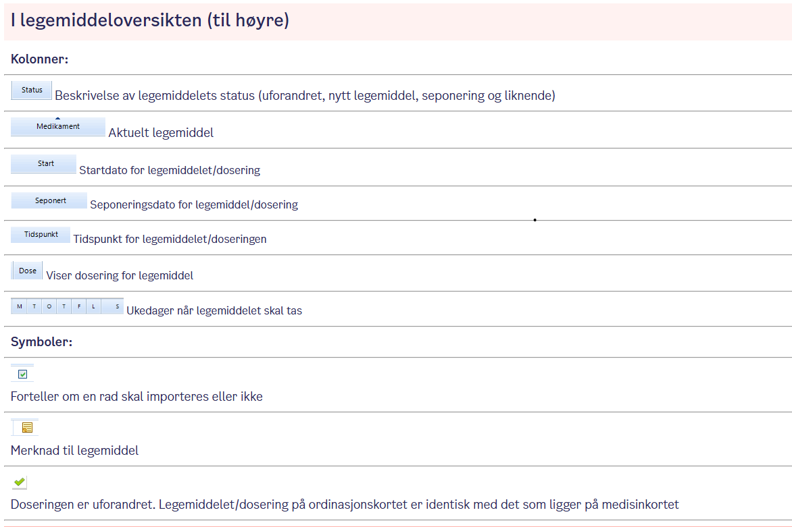
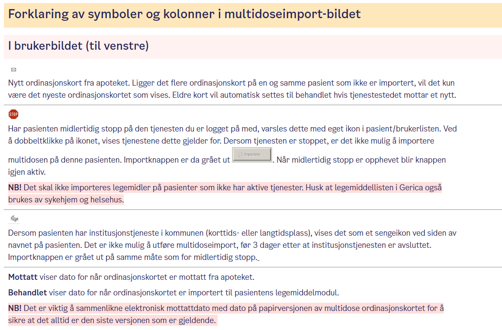
Faglige oppgaver som kun sykepleiere skal utføre
PICC-line: stell av innstikksted
PICC-line (Perifert Innlagt Sentralt Venekateter) er et perifert innlagt sentralt venekateter.
Forberedelse
- Utfør håndhygiene.
- Ta på rene hansker.
Fjern gammel bandasje
- Fjern den gamle bandasjen forsiktig.
- Løsne den transparente bandasjen ytterst og trekk den av mot innstikkstedet.
Observer innstikkstedet
- Inspiser innstikkstedet/utløpsstedet for:
- Lokalt ødem.
- Hematom.
- Lekkasje.
- Tegn til infeksjon:
- Ømhet.
- Rødme.
- Varme.
- Hevelse.
- Pussdannelse.
- Lukt.
Ved tegn til infeksjon:
Kontakt lege for vurdering av aktuelle tiltak, for eksempel mikrobiologisk prøvetaking eller fjerning av kateter.
Rengjøring av innstikksted
- Ta av hanskene og utfør håndhygiene.
- Ta på rene hansker.
- Bruk steril pinsett.
- Fukt en steril tupfer med desinfeksjonsmiddel.
- Desinfiser huden tilsvarende bandasjens størrelse fra innstikkstedet og utover.
- Bruk ny tupfer for hvert drag.
- La huden lufttørke i minimum 30 sekunder.
- Vær forsiktig slik at kateteret ikke forflyttes.
Rengjør kateteret
- Bruk steril pinsett.
- Fukt en steril tupfer med desinfeksjonsmiddel.
- Desinfiser hud og kateter fra innstikkstedet og mot plasteret med venekateterlås.
- La området lufttørke.
Skifte plaster med venekateterlås
Plaster med venekateterlås bør skiftes samtidig med ukentlig rutinemessig stell av innstikkstedet. Ved behov for hyppigere stell skiftes låsen kun dersom den er løs eller forurenset.
- Ta av beskyttelseshanskene dersom plaster med venekateterlås skal skiftes.
- Utfør håndhygiene.
- Ta på sterile hansker.
- Fikser kateteret midlertidig med steril suturtape.
- Bruk ny steril pinsett.
- Fukt plastervingene med en steril tupfer med desinfeksjonsmiddel.
- Åpne kateterlåsen.
- Frigjør kateteret og fjern plaster med kateterlås forsiktig.
- Desinfiser festestedet med desinfeksjonsmiddel.
- La området lufttørke.
- Påfør hudbeskyttende krem på festestedet og la den lufttørke i henhold til produktbeskrivelsen.
- Fikser PICC-line-kateteret i kateterlåsen og lukk låsen.
- Fjern beskyttelsespapiret fra plasterets underside én side om gangen.
- Fest plasteret til huden.
- Fjern suturtapen som midlertidig fikserte kateteret.
Avslutning
- Kontroller at kateteret sitter godt festet.
- Forsikre deg om at bandasjen sitter tett og at kateteret ikke utsettes for drag.
- Dokumenter utført stell og eventuelle observasjoner i pasientjournalen.
Prosedyre for Nefrostomi.
Nefrostomikateter: stell av innstikksted
Bandasjen skiftes minst én gang per uke, eller oftere dersom den blir gjennomtrukket eller løsner.
Forberedelse
- Utfør håndhygiene.
- Ta på rene hansker.
Fjern bandasjen
- Fjern kompresser og/eller fikseringsbandasje forsiktig.
- Løsne hjørnene først og arbeid innover mot midten.
- Støtt kateteret underveis slik at det ikke henger fast i bandasjen.
- Kast brukt kompress og bandasje i avfallsposen.
Observer
- Kontroller kateterets posisjon.
- Observer innstikkstedet og huden rundt for:
- Hudirritasjon
- Urinlekkasje
- Infeksjonstegn
- Blødning
- Ved mistanke om infeksjon, kontakt lege med tanke på mikrobiologisk prøvetaking.
Rengjøring
- Ta av hanskene og utfør håndhygiene.
- Ta på rene eller sterile hansker.
- Bruk steril pinsett og steril tupfer fuktet med NaCl 9 mg/ml eller vandig klorheksidin.
- Vask huden fra innstikkstedet og utover i en radius på 5–6 cm.
- Bruk ny steril tupfer ved behov.
- Rengjør kateterslangen fra innstikkstedet og utover med ny steril tupfer for hvert drag.
- Tørk huden rundt kateteret med sterile tupfere.
Ved mistanke om infeksjon: Kontakt lege.
Legg ny bandasje
Plasser kateteret skrått fremover mot hoftekammen.
Alternativ 1 – Kompressbandasje
- Legg en steril splittkompress rundt innstikkstedet.
- Ved behov bygg opp under kateterslangen med en brettet steril kompress slik at kateteret ligger i en myk bue.
- Legg en steril kompress over kateteret og innstikkstedet.
- Fest med filmbandasje.
Alternativ 2 – Steril fikseringsbandasje
- Legg steril fikseringsbandasje/spesialbandasje i henhold til produktinformasjonen.
Avslutning
- Fikser kateteret slik at det ikke oppstår drag, trykk mot huden eller knekk på slangen når pasienten beveger seg.
- Ta hensyn til pasientens preferanser.
- Ved behov pakk inn koblingspunkt og eventuell treveiskran med kompress.
- Plasser urinoppsamlingsposen under nyrenivå og bruk individuelt tilpasset festeanordning.
- Spritvask dialysebordet og organisatoren
- Vask hender med flytende såpe
- Legg frem nødvendig utstyr
- Sjekk posens utløpsdato, styrke og volum
- Åpne ytterposen på dialyseposen. Kontroller at væsken er klar og posen er hel
- Ves tilsetning av medikamenter:
- Åpne ytterposen på Y-settet
- Heng opp dialyseposen og heng ned tømmeposen. Plasser disken
- Sprit hender og la tørke
- Skru beskyttelseshetten fra discen og legg den på bordet.
- Skru pasientslangen fra desinfeksjonshetten og koble den til discen
- Skru beskyttelseshetten du nettopp la på bordet, på den gamle desinfeksjonshetten. Trekk den rett ut og kast
- Åpne klemmen på pasientslangen og tøm magen. Discen står automatisk i tømmeposisjon.
- a: Desinfiser injeksjonsporten til Extraneal posen med injeksjonstørk
- b: Tilsett medisiner, aspirer og sprøyt inn en gang på nytt
- c: Bland godt
vent mens buken tømmes for dialyse
- ➡️
- ➡️
- ➡️
- ➡️
- ➡️
- ➡️
- ➡️
- ➡️
- ➡️
- ➡️
- ➡️
- ➡️
Velferdsteknologi
Kommer senere
Kommer senere


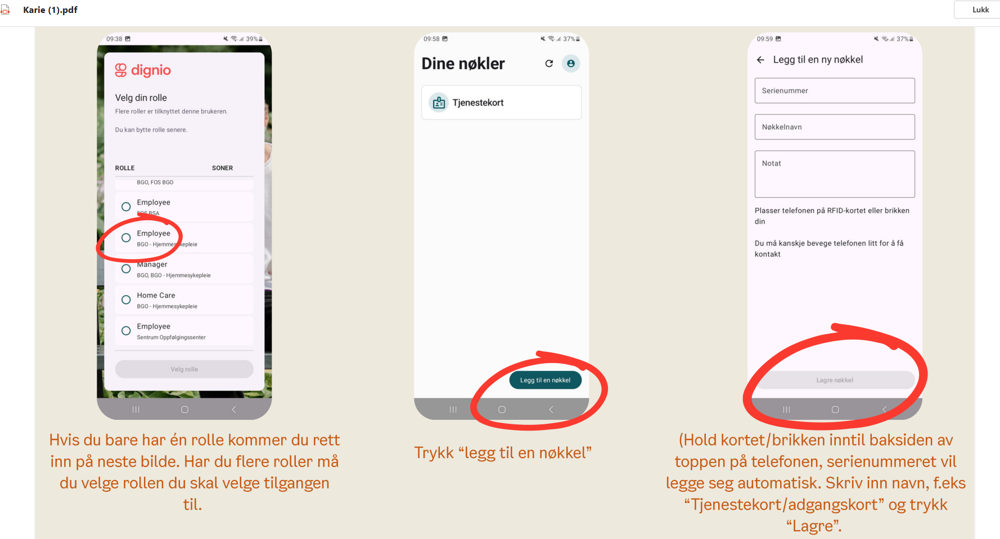
Kommer senere


Beregn tid for Dokumentasjon
➡️1- Finn brukeren under brukersøk
2- Klikk på navnet
3- Klikk på pliuss-tegnet neserst til høyre
4- Velg nytt besøk
5- Velg dato, stattid og slutttid
6- legg til oppdrag
7- Velg "Ekstra besøk"
8- Skriv tiden du har brukt på dokumentasjonen (varighet)
9- Lagre
10- Nå kommer besøket på din liste
11- Registrer og skriv det du skal dokumentere om brukeren der